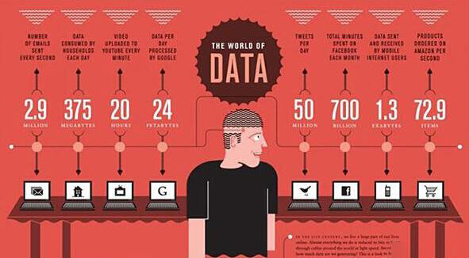

<!DOCTYPE html><html><head><meta charset="utf-8"><title>想进入大数据领域，大数据的五大问题你了解吗？ | 技术学派</title><meta name="viewport" content="width=device-width,initial-scale=1,maximum-scale=1"><meta name="keywords" content="IT培训, Python, 大数据, 人工智能, Web前端, PHP, "><meta name="description" content="大数据已成为一个高速信息社会科技发达，信息流通，人们之间的交流越来越密切，生活也越来越方便的高科技时代产物。那么关于大数据的五大问题你是否了解?今日就跟着技术学派一起来看一看。第一，大数据是什么?大数据是指无法在一定时间范围内用常规软件工具进行捕捉、管理和处理的数据集合，是需要新处理模式才能具有更强的决策力、洞察发现力和流程优化能力的海量、高增长率和多样化的信息资产。大数据可分成大数据技术、大数据"><meta property="og:type" content="article"><meta property="og:title" content="想进入大数据领域，大数据的五大问题你了解吗？"><meta property="og:url" content="http://www.JiShuXuePai.com/blog/学习答疑/学习答疑/想进入大数据领域，大数据的五大问题你了解吗？/index.html"><meta property="og:site_name" content="技术学派"><meta property="og:description" content="大数据已成为一个高速信息社会科技发达，信息流通，人们之间的交流越来越密切，生活也越来越方便的高科技时代产物。那么关于大数据的五大问题你是否了解?今日就跟着技术学派一起来看一看。第一，大数据是什么?大数据是指无法在一定时间范围内用常规软件工具进行捕捉、管理和处理的数据集合，是需要新处理模式才能具有更强的决策力、洞察发现力和流程优化能力的海量、高增长率和多样化的信息资产。大数据可分成大数据技术、大数据"><meta property="og:locale" content="zh-CN"><meta property="og:image" content="http://www.jishuxuepai.com/blog/学习答疑/学习答疑/想进入大数据领域，大数据的五大问题你了解吗？/01.jpg"><meta property="og:updated_time" content="2018-06-07T14:40:52.000Z"><meta name="twitter:card" content="summary"><meta name="twitter:title" content="想进入大数据领域，大数据的五大问题你了解吗？"><meta name="twitter:description" content="大数据已成为一个高速信息社会科技发达，信息流通，人们之间的交流越来越密切，生活也越来越方便的高科技时代产物。那么关于大数据的五大问题你是否了解?今日就跟着技术学派一起来看一看。第一，大数据是什么?大数据是指无法在一定时间范围内用常规软件工具进行捕捉、管理和处理的数据集合，是需要新处理模式才能具有更强的决策力、洞察发现力和流程优化能力的海量、高增长率和多样化的信息资产。大数据可分成大数据技术、大数据"><meta name="twitter:image" content="http://www.jishuxuepai.com/blog/学习答疑/学习答疑/想进入大数据领域，大数据的五大问题你了解吗？/01.jpg"><link rel="stylesheet" href="/libs/bootstrap/bootstrap-grid.css"><link rel="stylesheet" href="/libs/font-awesome/css/font-awesome.min.css"><link rel="stylesheet" href="/libs/titillium-web/styles.css"><link rel="stylesheet" href="/libs/source-code-pro/styles.css"><link rel="stylesheet" href="/css/style.css"><script src="/libs/jquery/jquery.min.js"></script><link rel="stylesheet" href="/libs/lightgallery/css/lightgallery.min.css"><link rel="stylesheet" href="/libs/justified-gallery/justifiedGallery.min.css"><script>var _hmt=_hmt||[];!function(){var e=document.createElement("script");e.src="//hm.baidu.com/hm.js?4c1bd812de3c30edbaa2b803c66f0a04";var t=document.getElementsByTagName("script")[0];t.parentNode.insertBefore(e,t)}()</script></head></html><body><div id="wrap"><header id="header"><div id="header-outer" class="outer"><div class="container"><div class="container-inner"><div id="header-title"><h1 class="logo-wrap"><a href="/" class="logo"></a></h1></div><div id="header-inner" class="nav-container"><a id="main-nav-toggle" class="nav-icon fa fa-bars">菜单</a><div class="nav-container-inner"><ul id="main-nav"><li class="main-nav-list-item"><a class="main-nav-list-link" href="/">主页</a></li><li class="main-nav-list-item"><a class="main-nav-list-link" href="/edu/index.html">学编程</a></li><li class="main-nav-list-item"><a class="main-nav-list-link" href="/blog/">博客</a></li><li class="main-nav-list-item"><a class="main-nav-list-link" href="/tips.html">学习建议</a></li><li class="main-nav-list-item"><a class="main-nav-list-link" href="/about.html">关于</a></li></ul><nav id="sub-nav"><div id="search-form-wrap"><form class="search-form"><input type="text" class="ins-search-input search-form-input" placeholder="搜索"> <button type="submit" class="search-form-submit"></button></form><div class="ins-search"><div class="ins-search-mask"></div><div class="ins-search-container"><div class="ins-input-wrapper"><input type="text" class="ins-search-input" placeholder="想要查找什么..."> <span class="ins-close ins-selectable"><i class="fa fa-times-circle"></i></span></div><div class="ins-section-wrapper"><div class="ins-section-container"></div></div></div></div><script>window.INSIGHT_CONFIG={TRANSLATION:{POSTS:"文章",PAGES:"页面",CATEGORIES:"分类",TAGS:"标签",UNTITLED:"(未命名)"},ROOT_URL:"/",CONTENT_URL:"/content.json"}</script><script src="/js/insight.js"></script></div></nav></div></div></div></div></div></header><div class="container"><div class="main-body container-inner"><div class="main-body-inner"><section id="main"><div class="main-body-header"><h1 class="header"><a class="page-title-link" href="/categories/学习答疑/">学习答疑</a><div class="author"></div></h1></div><div class="main-body-content"><article id="post-学习答疑/想进入大数据领域，大数据的五大问题你了解吗？" class="article article-single article-type-post" itemscope itemprop="blogPost"><div class="article-inner"><header class="article-header"><h1 class="article-title" itemprop="name">想进入大数据领域，大数据的五大问题你了解吗？</h1></header><div class="article-meta"><div class="article-date"><a href="/blog/学习答疑/学习答疑/想进入大数据领域，大数据的五大问题你了解吗？/" class="article-date"><time datetime="2018-06-07T14:32:34.162Z" itemprop="datePublished">2018-06-07</time></a></div></div><div class="article-entry" itemprop="articleBody"><p>大数据已成为一个高速信息社会科技发达，信息流通，人们之间的交流越来越密切，生活也越来越方便的高科技时代产物。那么关于大数据的五大问题你是否了解?今日就跟着技术学派一起来看一看。</p><h3 id="第一，大数据是什么"><a href="#第一，大数据是什么" class="headerlink" title="第一，大数据是什么?"></a>第一，大数据是什么?</h3><p>大数据是指无法在一定时间范围内用常规软件工具进行捕捉、管理和处理的数据集合，是需要新处理模式才能具有更强的决策力、洞察发现力和流程优化能力的海量、高增长率和多样化的信息资产。</p><p>大数据可分成大数据技术、大数据工程、大数据科学和大数据应用等领域。目前人们谈论最多的是大数据技术和大数据应用。工程和科学问题尚未被重视。大数据工程指大数据的规划建设运营管理的系统工程；大数据科学关注大数据网络发展和运营过程中发现和验证大数据的规律及其与自然和社会活动之间的关系。</p><p>大数据不仅仅是大量的数据，还是来自不同来源，存在不同类型，代表不同含义的海量数据。大数据应该动态变化，不断增加，而且能够通过研究分析发现规律产生价值。</p><p></p><h3 id="第二，大数据可以做什么"><a href="#第二，大数据可以做什么" class="headerlink" title="第二，大数据可以做什么?"></a>第二，大数据可以做什么?</h3><p>物联网、云计算、移动互联网、车联网、手机、平板电脑、PC以及遍布地球各个角落的各种各样的传感器，无一不是数据来源或者承载的方式。</p><p>大数据能用来收集分析人们的社会需求和生活状态；还可以用大数据的分析来改善城市交通管理；大数据还能分析人们的身体健康情况、保障市民的医疗和健康条件；还可以分析和防止犯罪行为等；可以帮助我们根据对历史情况的分析，发现事物的发展变化规律，可以有助于更好的提高生产效率，预防意外发生，促进营业销售，使我们的工作和生活变得更加高效轻松便利。</p><p></p><h3 id="第三，如何使用大数据"><a href="#第三，如何使用大数据" class="headerlink" title="第三，如何使用大数据?"></a>第三，如何使用大数据?</h3><p>我们利用已经收集的数据，建立各种数学模型，然后进行模拟运算，通过代入不同的数据，调整每次代入的数据点，计算可能产生的结果数据，并分析这种数据可能产生的影响。这种过程涉及的数据量和变化都是海量的，因此需要强大的计算和存储能力。</p><p>随着大数据的应用越来越广泛，应用的行业也越来越低，我们每日都可以看到大数据的一些新颖的应用，从而帮助人们从中获取到真正有用的价值。许多组织或者个人都会受到大数据的剖析影响，但是大数据是怎样帮助人们挖掘出有价值的信息呢?</p><p><strong>1.理解客户、满足客户服务需求</strong></p><p>大数据的应用现在在这领域是最广为人知的。重点是怎样应用大数据更好的了解客户以及他们的喜好和行为。企业极度喜欢搜集社交方面的数据、浏览器的日志、剖析出文本和传感器的数据，为了更加全面的了解客户。在通常情况下，创建出数据模型进行预测。好比美国的著名零售商Target就是通过大数据的剖析，获得有价值的信息，精准得预测到客户在什么时间想要小孩。另外，通过大数据的应用，电信公司可以更好预测出流失的客户，沃尔玛则更加精准的预测哪个产品会大卖，汽车保险行业会了解客户的需求和驾驶水平，政府也能了解到选民的偏好。</p><p><strong>2.业务流程优化</strong></p><p>大数据也更多的帮助业务流程的优化。可以通过利用社交媒体数据、网络搜索以及天气预告挖掘出有价值的数据，其中大数据的应用最广泛的就是供应链以及配送路线的优化。在这2个方面，地理定位和无线电频率的识别追踪货物和送货车，利用实时交通路线数据制订更加优化的路线。人力资源业务也通过大数据的剖析来进行改良，这其中就包括了人才招聘的优化。</p><p><strong>3.大数据正在改善我们的生活</strong></p><p>大数据不单单只是应用于企业和政府，同样也适用我们生活当中的每个人。我们可以利用穿着的装备(如智能手表或者智能手环)生成最新的数据，这让我们可以凭据我们热量的消耗以及睡眠模式来进行追踪。而且还利用大数据剖析来寻找属于我们的爱情，大多数时间交友网站就是大数据应用工具来帮助需要的人匹配合适的对象。</p><p><strong>4.提高医疗和研发</strong></p><p>大数据剖析应用的计算能力可以让我们能够在几分钟内就可以解码整个DNA。而且让我们可以制订出最新的治疗方案。同时可以更好的去理解和预测疾病。就好像人们戴上智能手表等可以形成的数据一样，大数据同样可以帮助病人对于病情进行更好的治疗。大数据技术现在已经在医院应用监视早产婴儿和患病婴儿的情况，通过记录和剖析婴儿的心跳，医生针对婴儿的身体可能会出现不适症状做出预测。这样可以帮助医生更好的救助婴儿。</p><p></p><h3 id="第四，大数据有哪些应用场景"><a href="#第四，大数据有哪些应用场景" class="headerlink" title="第四，大数据有哪些应用场景?"></a>第四，大数据有哪些应用场景?</h3><p>通过医学数据的积累和分析，预测疾病发生的概率，以及如何更好的治愈;通过人们日常消费数据的积累和分析，预测消费需求，促进销售;通过环境数据的积累和分析，预测未来气候变化，防范自然灾害。</p><p>下面就让我们一起来看看8个价值极度高的大数据的应用，这些都是大数据在剖析应用上的关键领域：</p><ul><li>大数据帮助政府实现市场经济调控、公共卫生安全防范、灾难预警、社会舆论监督；</li><li>大数据帮助城市预防犯罪，实现智慧交通，提升紧急应急能力；</li><li>大数据帮助医疗机构建立患者的疾病风险跟踪机制，帮助医药企业提升药品的临床使用效果，帮助艾滋病研究机构为患者提供定制的药物；</li><li>大数据帮助航空公司节省运营成本，帮助电信企业实现售后服务质量提升，帮助保险企业识别欺诈骗保行为，帮助快递公司监测分析运输车辆的故障险情以提前预警维修，帮助电力公司有效识别预警即将发生故障的设备；</li><li>大数据帮助电商公司向用户推荐商品和服务，帮助旅游网站为旅游者提供心仪的旅游路线，帮助二手市场的买卖双方找到最合适的交易目标，帮助用户找到最合适的商品购买时期、商家和最优惠价格；</li><li>大数据帮助企业提升营销的针对性，降低物流和库存的成本，减少投资的风险，以及帮助企业提升广告投放精准度；</li><li>大数据帮助娱乐行业预测歌手，歌曲，电影，电视剧的受欢迎程度，并为投资者分析评估拍一部电影需要投入多少钱才最合适，否则就有可能收不回成本；</li><li>大数据帮助社交网站提供更准确的好友推荐，为用户提供更精准的企业招聘信息，向用户推荐可能喜欢的游戏以及适合购买的商品。</li></ul><p></p><h3 id="第五，大数据概念是什么"><a href="#第五，大数据概念是什么" class="headerlink" title="第五，大数据概念是什么?"></a>第五，大数据概念是什么?</h3><p>大数据就是互联网发展到现今阶段的一种表象或特征而已，没有必要神话它或对它保持敬畏之心，在以云计算为代表的技术创新大幕的衬托下，这些原本很难收集和使用的数据开始容易被利用起来了，通过各行各业的不断创新，大数据会逐步为人类创造更多的价值。</p><p>其次，想要系统的认知大数据，必须要全面而细致的分解它，小编着手从三个层面来展开：</p><p>第一层面是理论，理论是认知的必经途径，也是被广泛认同和传播的基线。在这里从大数据的特征定义理解行业对大数据的整体描绘和定性；从对大数据价值的探讨来深入解析大数据的珍贵所在；洞悉大数据的发展趋势；从大数据隐私这个特别而重要的视角审视人和数据之间的长久博弈。</p><p>第二层面是技术，技术是大数据价值体现的手段和前进的基石。在这里分别从云计算、分布式处理技术、存储技术和感知技术的发展来说明大数据从采集、处理、存储到形成结果的整个过程。</p><p>第三层面是实践，实践是大数据的最终价值体现。在这里分别从互联网的大数据，政府的大数据，企业的大数据和个人的大数据四个方面来描绘大数据已经展现的美好景象及即将实现的蓝图。</p><p></p><p>分享 IT 技术和行业经验，请关注-技术学派。</p></div><footer class="article-footer"><a data-url="http://www.JiShuXuePai.com/blog/学习答疑/学习答疑/想进入大数据领域，大数据的五大问题你了解吗？/" data-id="cji4nfbm70000bn961t2i3dz7" class="article-share-link"><i class="fa fa-share"></i>分享到</a><script>!function(n){n("body").on("click",function(){n(".article-share-box.on").removeClass("on")}).on("click",".article-share-link",function(t){t.stopPropagation();var e,a=n(this),o=a.attr("data-url"),r=encodeURIComponent(o),i="article-share-box-"+a.attr("data-id"),s=a.offset();if(n("#"+i).length){if((e=n("#"+i)).hasClass("on"))return void e.removeClass("on")}else{var l=['<div id="'+i+'" class="article-share-box">','<input class="article-share-input" value="'+o+'">','<div class="article-share-links">','<a href="https://twitter.com/intent/tweet?url='+r+'" class="article-share-twitter" target="_blank" title="Twitter"></a>','<a href="https://www.facebook.com/sharer.php?u='+r+'" class="article-share-facebook" target="_blank" title="Facebook"></a>','<a href="http://pinterest.com/pin/create/button/?url='+r+'" class="article-share-pinterest" target="_blank" title="Pinterest"></a>','<a href="https://plus.google.com/share?url='+r+'" class="article-share-google" target="_blank" title="Google+"></a>',"</div>","</div>"].join("");e=n(l),n("body").append(e)}n(".article-share-box.on").hide(),e.css({top:s.top+25,left:s.left}).addClass("on")}).on("click",".article-share-box",function(t){t.stopPropagation()}).on("click",".article-share-box-input",function(){n(this).select()}).on("click",".article-share-box-link",function(t){t.preventDefault(),t.stopPropagation(),window.open(this.href,"article-share-box-window-"+Date.now(),"width=500,height=450")})}(jQuery)</script></footer></div></article><section id="comments"><div id="gitalk_frame"></div></section></div></section><aside id="sidebar"><a class="sidebar-toggle" title="Expand Sidebar"><i class="toggle icon"></i></a><div class="sidebar-top"><p>关注我 :</p><ul class="social-links"><li><a class="social-tooltip" title="火星时代" href="http://edu.hxsd.com/edunew/topics/webfull/index.html" target="_blank"><i class="icon fa fa-dribbble"></i></a></li><li><a class="social-tooltip" title="weibo" href="#" target="_blank"><i class="icon fa fa-weibo"></i></a></li><li><a class="social-tooltip" title="rss" href="/atom.xml" target="_blank"><i class="icon fa fa-rss"></i></a></li></ul></div><nav id="article-nav"><a href="/blog/学习答疑/学习答疑/如何判断自己适不适合做一名程序员？/" id="article-nav-newer" class="article-nav-link-wrap"><strong class="article-nav-caption">下一篇</strong><p class="article-nav-title">如何判断自己适不适合做一名程序员？</p><i class="icon fa fa-chevron-right" id="icon-chevron-right"></i> </a><a href="/blog/学习答疑/学习答疑/Java、Python和大数据，哪个发展前景最好？/" id="article-nav-older" class="article-nav-link-wrap"><strong class="article-nav-caption">上一篇</strong><p class="article-nav-title">Java、Python和大数据，哪个发展前景最好？</p><i class="icon fa fa-chevron-left" id="icon-chevron-left"></i></a></nav><div class="widgets-container"><div class="widget-wrap widget-list"><h3 class="widget-title">分类</h3><div class="widget"><ul class="category-list"><li class="category-list-item"><a class="category-list-link" href="/categories/animate/">animate</a><span class="category-list-count">17</span></li><li class="category-list-item"><a class="category-list-link" href="/categories/git/">git</a><span class="category-list-count">1</span></li><li class="category-list-item"><a class="category-list-link" href="/categories/html/">html</a><span class="category-list-count">2</span></li><li class="category-list-item"><a class="category-list-link" href="/categories/js/">js</a><span class="category-list-count">5</span></li><li class="category-list-item"><a class="category-list-link" href="/categories/php/">php</a><span class="category-list-count">3</span></li><li class="category-list-item"><a class="category-list-link" href="/categories/vue/">vue</a><span class="category-list-count">1</span></li><li class="category-list-item"><a class="category-list-link" href="/categories/学习答疑/">学习答疑</a><span class="category-list-count">20</span></li><li class="category-list-item"><a class="category-list-link" href="/categories/插件资源库/">插件资源库</a><span class="category-list-count">4</span></li></ul></div></div><link rel="stylesheet" href="/css/tech/toc.css"><div class="widget-wrap widget-list widget-toc"><h3 class="widget-title">目录</h3><div class="widget"><div class="toc"></div><link rel="stylesheet" href="https://cdnjs.cloudflare.com/ajax/libs/tocbot/3.0.5/tocbot.css"><script src="https://cdnjs.cloudflare.com/ajax/libs/tocbot/3.0.5/tocbot.min.js"></script><script>$(function(){$(".main-body-content").find("h1,h2,h3").each(function(t){$(this).attr("id")||$(this).attr("id","list"+t)}),tocbot.init({tocSelector:".toc",contentSelector:".main-body-content",headingSelector:"h1, h2, h3",collapseDepth:2,positionFixedSelector:".widget-toc",fixedSidebarOffset:595,includeHtml:!1})})</script></div></div><div class="widget-wrap widget-list"><h3 class="widget-title">标签</h3><div class="widget"><ul class="tag-list"><li class="tag-list-item"><a class="tag-list-link" href="/tags/C/">C</a><span class="tag-list-count">1</span></li><li class="tag-list-item"><a class="tag-list-link" href="/tags/python/">python</a><span class="tag-list-count">7</span></li><li class="tag-list-item"><a class="tag-list-link" href="/tags/web前端/">web前端</a><span class="tag-list-count">2</span></li></ul></div></div><div class="widget-wrap widget-float"><h3 class="widget-title">标签云</h3><div class="widget tagcloud"><a href="/tags/C/" style="font-size:10px">C</a> <a href="/tags/python/" style="font-size:20px">python</a> <a href="/tags/web前端/" style="font-size:15px">web前端</a></div></div><div class="widget-wrap widget-list"><h3 class="widget-title">链接</h3><div class="widget"><ul><li><a href="http://edu.hxsd.com/edunew/topics/webfull/index.html">火星时代</a></li></ul></div></div></div></aside><script>$(function(){$(window).scroll(function(){240<=$(document).scrollTop()?($("#sidebar .sidebar-toggle").addClass("fix"),"block"==$("#sidebar .sidebar-toggle").css("display")&&$(".is-position-fixed").css("top","35px")):$("#sidebar .sidebar-toggle").removeClass("fix")})})</script></div></div></div><footer id="footer"><div class="top"><div class="inner"><div class="list"><div class="left clearfix"><dl><dt>关于我们</dt><dd><a href="/about.html" target="_blank">公司简介</a></dd><dd><a href="edu/index.html" target="_blank">联系我们</a></dd></dl><dl><dt>校区攻略</dt><dd><a href="edu/index.html" target="_blank">校区环境</a></dd><dd><a href="edu/index.html" target="_blank">住宿攻略</a></dd><dd><a href="edu/index.html" target="_blank">来校路线</a></dd></dl><dl><dt>课程培训</dt><dd><a href="edu/python.html" target="_blank">Python</a></dd><dd><a href="edu/python.html" target="_blank">Web前端</a></dd><dd><a href="edu/python.html" target="_blank">PHP</a></dd><dd><a href="edu/python.html" target="_blank">人工智能</a></dd><dd><a href="edu/python.html" target="_blank">大数据</a></dd></dl><dl><dt>常见问答</dt><dd><a href="edu/index.html" target="_blank">学费学时</a></dd><dd><a href="edu/index.html" target="_blank">学习方法</a></dd></dl></div></div><div class="tel"><tel>176-0025-8815</tel><span>北京市海淀区杏石口路81号火星时代大厦</span></div><div class="weixin"><div class="w1"> <span>头条号</span></div><div class="w1"> <span>官方微信</span></div></div></div></div><div class="bot">Copyright 2018 技术学派 京ICP备15015508号-3</div></footer><link rel="stylesheet" href="https://unpkg.com/gitalk/dist/gitalk.css"><script src="https://unpkg.com/gitalk/dist/gitalk.min.js"></script><script>var gitalk=new Gitalk({clientID:"2fbbb9980b49019d99a7",clientSecret:"152dd10e83ef6595761ea2185304f9ac8263573f",repo:"jsxp",owner:"li-kang",admin:["li-kang"]});gitalk.render("gitalk_frame")</script><script src="/libs/lightgallery/js/lightgallery.min.js"></script><script src="/libs/lightgallery/js/lg-thumbnail.min.js"></script><script src="/libs/lightgallery/js/lg-pager.min.js"></script><script src="/libs/lightgallery/js/lg-autoplay.min.js"></script><script src="/libs/lightgallery/js/lg-fullscreen.min.js"></script><script src="/libs/lightgallery/js/lg-zoom.min.js"></script><script src="/libs/lightgallery/js/lg-hash.min.js"></script><script src="/libs/lightgallery/js/lg-share.min.js"></script><script src="/libs/lightgallery/js/lg-video.min.js"></script><script src="/libs/justified-gallery/jquery.justifiedGallery.min.js"></script><script src="/js/main.js"></script></div></body>